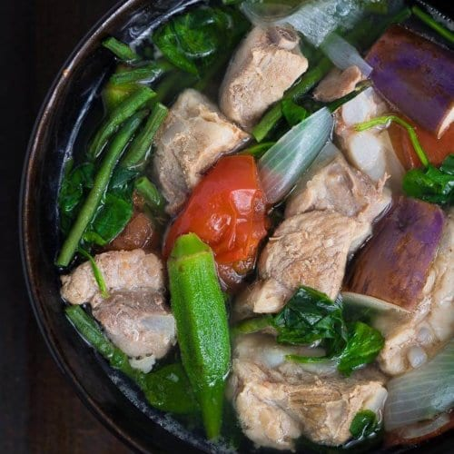

Pork Sinigang Recipe

Sinigang sa Baboy (Pork Belly)
Sinigang is a popular dish in the Philippines. The main ingredients of the dish depends on the preference of the cook.
However, I particularly like using pork belly, also referred to as liempo or shrimp, specifically sugpo.
In this tutorial, you'll learn how to cook a staple dish for millions of Filipinos inside and outside the country.
Ingredients
- 2 lbs pork belly or buto-buto
- 1 bunch spinach or kang-kong
- 3 tablespoons fish sauce
- 12 pieces string beans sitaw, cut in 2 inch length
- 2 pieces tomato quartered
- 3 pieces chili or banana pepper
- 1 tablespoons cooking oil
- Tamarind or Sinigang Mixfor convenience
- 1 piece onion sliced
- 2 pieces taro gabi, quartered
Steps
- Heat the pot and put-in the cooking oil
- Sauté the onion until its layers separate from each other
- Add the pork belly and cook until outer part turns light brown
- Put-in the fish sauce and mix with the ingredientsh
- Pour the water and bring to a boil
- Add the taro and tomatoes then simmer for 40 minutes or until pork is tender
- Put-in the sinigang mix and chilil
- Add the string beans (and other vegetables if there are any) and simmer for 5 to 8 minutes
- Put-in the spinach, turn off the heat, and cover the pot. Let the spinach cook using the remaining heat in the pot.
- Serve hot. Share and enjoy!